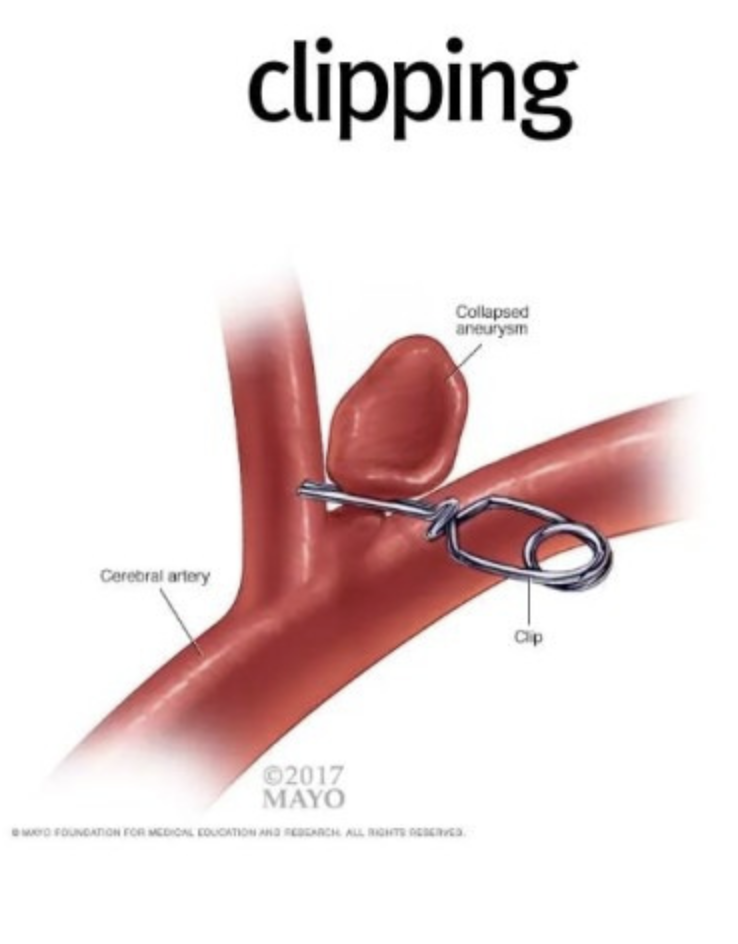
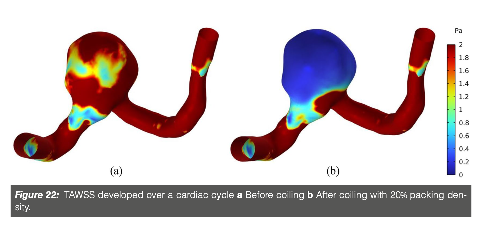
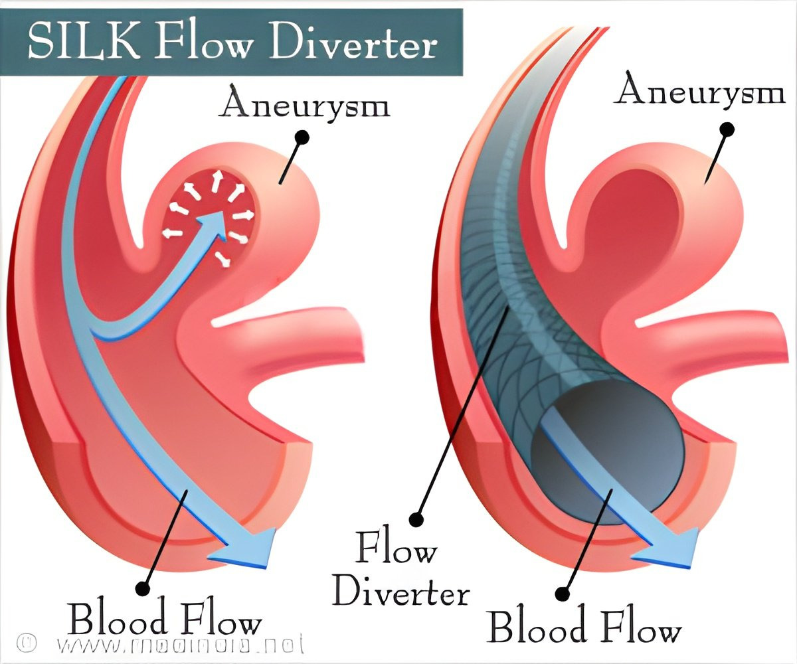

이제,
그러면 Aneurysm을
어떻게 제거하는지
실제 환자들에게 적용시키는
방식들에 대해서 알아보자.
1. 절개 수술(Clipping Surgery)
전통적인 외과적 방법
-> 두개골 절개 이후, 직접 제거하는 방식.

하지만, 요즘에는 피하는 방법중 하나이다.
수술 도중 조그만한 사고가
굉장이 큰 뇌손상으로 이어 질 수 있다.
그럼에도,
다른 방식들과 다르게,
한번 실시하면 동맥류로의 혈류가 영구적으로 차단된다.
2. Coiling
비침습적인 혈관 시술 방법으로,
특히, 파열된 동맥류의 응급치료로 많이 사용한다.
대퇴동맥(허벅지)을 절개한후,
cathether 를 삽입하여, 해당 위치로 이동
카테터를 이용하여, 코일을 동맥류에 채워 넣는 방식.
![[Cardiovascular disease] Aneurysm _ part4](./images/img-002.png)
위 그림처럼, 코일을 채워 넣게 되면,
동맥류 안의 혈액이 자연스럽게 응고하게 된다.
-> 동맥류 혈액 주입 차단.

실제로, 코일링 이후에, 환자의 혈관의 압력을 분석한 결과.
동맥류 안에 압력이 감소 -> 혈류 차단
되었음을 알 수 있었다.
단점: 1번 절개술과 다르게, 완전히 차단되지 않을 수도 있음 (재수술)
:아주 작은 동맥류의 경우, 카테터 들어가기 어려울 수도.
https://www.youtube.com/watch?v=kCE1zSM1TaA
영상보면 완벽하게 이해 가실 겁니다.
영상을 보면 알 수 있듯이,
wide neck aneurysm같은 경우
코일이 채워지지 않을 수 있다(밖으로 새어 나옴)
그런 경우, stent를 먼저 삽입한 후에,
코일을 넣는 방법을 택한다.
3. Flow diverter
마지막으로, 새로운 치료법으로
동맥류 주변의 혈류흐름자체를 변경해버리는 방법이다.
촘촘한 스탠트를 삽입하여, 동맥류로 혈액이 들어가지 않게 한다.
-> 따라서, 동맥류 내부 기존 혈액은 응고된다.
-> 결국 동맥류가 터질 위험도 없고, 더이상 커지지 않게 된다.
-> 시간이 흐르면, '섬유화 과정' 이 일어나서
응고된 혈액
-> 결합조직으로 변화하면서 동매류 자체가 더 단단해지고 안정화됨.

그러나
혈류 차단이 완벽하지 않거나
,
미세한 혈류
가 여전히 동맥류로 들어가는 경우
->
섬유화 과정이 불충분 할수도 있다.